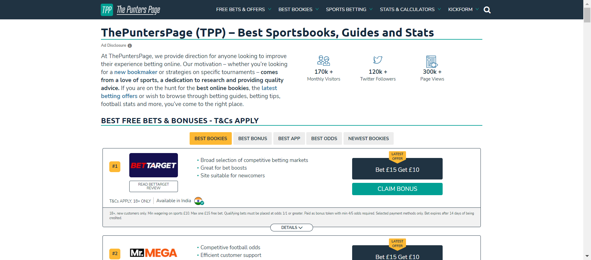

<!DOCTYPE html>
<html>
  <head>
    <meta charset="utf-8"/>
    <title>Test Report</title>
    <link href="assets/style.css" rel="stylesheet" type="text/css"/></head>
  <body onLoad="init()">
    <script>/* This Source Code Form is subject to the terms of the Mozilla Public
 * License, v. 2.0. If a copy of the MPL was not distributed with this file,
 * You can obtain one at http://mozilla.org/MPL/2.0/. */


function toArray(iter) {
    if (iter === null) {
        return null;
    }
    return Array.prototype.slice.call(iter);
}

function find(selector, elem) {
    if (!elem) {
        elem = document;
    }
    return elem.querySelector(selector);
}

function find_all(selector, elem) {
    if (!elem) {
        elem = document;
    }
    return toArray(elem.querySelectorAll(selector));
}

function sort_column(elem) {
    toggle_sort_states(elem);
    var colIndex = toArray(elem.parentNode.childNodes).indexOf(elem);
    var key;
    if (elem.classList.contains('numeric')) {
        key = key_num;
    } else if (elem.classList.contains('result')) {
        key = key_result;
    } else {
        key = key_alpha;
    }
    sort_table(elem, key(colIndex));
}

function show_all_extras() {
    find_all('.col-result').forEach(show_extras);
}

function hide_all_extras() {
    find_all('.col-result').forEach(hide_extras);
}

function show_extras(colresult_elem) {
    var extras = colresult_elem.parentNode.nextElementSibling;
    var expandcollapse = colresult_elem.firstElementChild;
    extras.classList.remove("collapsed");
    expandcollapse.classList.remove("expander");
    expandcollapse.classList.add("collapser");
}

function hide_extras(colresult_elem) {
    var extras = colresult_elem.parentNode.nextElementSibling;
    var expandcollapse = colresult_elem.firstElementChild;
    extras.classList.add("collapsed");
    expandcollapse.classList.remove("collapser");
    expandcollapse.classList.add("expander");
}

function show_filters() {
    var filter_items = document.getElementsByClassName('filter');
    for (var i = 0; i < filter_items.length; i++)
        filter_items[i].hidden = false;
}

function add_collapse() {
    // Add links for show/hide all
    var resulttable = find('table#results-table');
    var showhideall = document.createElement("p");
    showhideall.innerHTML = '<a href="javascript:show_all_extras()">Show all details</a> / ' +
                            '<a href="javascript:hide_all_extras()">Hide all details</a>';
    resulttable.parentElement.insertBefore(showhideall, resulttable);

    // Add show/hide link to each result
    find_all('.col-result').forEach(function(elem) {
        var collapsed = get_query_parameter('collapsed') || 'Passed';
        var extras = elem.parentNode.nextElementSibling;
        var expandcollapse = document.createElement("span");
        if (collapsed.includes(elem.innerHTML)) {
            extras.classList.add("collapsed");
            expandcollapse.classList.add("expander");
        } else {
            expandcollapse.classList.add("collapser");
        }
        elem.appendChild(expandcollapse);

        elem.addEventListener("click", function(event) {
            if (event.currentTarget.parentNode.nextElementSibling.classList.contains("collapsed")) {
                show_extras(event.currentTarget);
            } else {
                hide_extras(event.currentTarget);
            }
        });
    })
}

function get_query_parameter(name) {
    var match = RegExp('[?&]' + name + '=([^&]*)').exec(window.location.search);
    return match && decodeURIComponent(match[1].replace(/\+/g, ' '));
}

function init () {
    reset_sort_headers();

    add_collapse();

    show_filters();

    sort_column(find('.initial-sort'));

    find_all('.sortable').forEach(function(elem) {
        elem.addEventListener("click",
                              function(event) {
                                  sort_column(elem);
                              }, false)
    });

};

function sort_table(clicked, key_func) {
    var rows = find_all('.results-table-row');
    var reversed = !clicked.classList.contains('asc');
    var sorted_rows = sort(rows, key_func, reversed);
    /* Whole table is removed here because browsers acts much slower
     * when appending existing elements.
     */
    var thead = document.getElementById("results-table-head");
    document.getElementById('results-table').remove();
    var parent = document.createElement("table");
    parent.id = "results-table";
    parent.appendChild(thead);
    sorted_rows.forEach(function(elem) {
        parent.appendChild(elem);
    });
    document.getElementsByTagName("BODY")[0].appendChild(parent);
}

function sort(items, key_func, reversed) {
    var sort_array = items.map(function(item, i) {
        return [key_func(item), i];
    });

    sort_array.sort(function(a, b) {
        var key_a = a[0];
        var key_b = b[0];

        if (key_a == key_b) return 0;

        if (reversed) {
            return (key_a < key_b ? 1 : -1);
        } else {
            return (key_a > key_b ? 1 : -1);
        }
    });

    return sort_array.map(function(item) {
        var index = item[1];
        return items[index];
    });
}

function key_alpha(col_index) {
    return function(elem) {
        return elem.childNodes[1].childNodes[col_index].firstChild.data.toLowerCase();
    };
}

function key_num(col_index) {
    return function(elem) {
        return parseFloat(elem.childNodes[1].childNodes[col_index].firstChild.data);
    };
}

function key_result(col_index) {
    return function(elem) {
        var strings = ['Error', 'Failed', 'Rerun', 'XFailed', 'XPassed',
                       'Skipped', 'Passed'];
        return strings.indexOf(elem.childNodes[1].childNodes[col_index].firstChild.data);
    };
}

function reset_sort_headers() {
    find_all('.sort-icon').forEach(function(elem) {
        elem.parentNode.removeChild(elem);
    });
    find_all('.sortable').forEach(function(elem) {
        var icon = document.createElement("div");
        icon.className = "sort-icon";
        icon.textContent = "vvv";
        elem.insertBefore(icon, elem.firstChild);
        elem.classList.remove("desc", "active");
        elem.classList.add("asc", "inactive");
    });
}

function toggle_sort_states(elem) {
    //if active, toggle between asc and desc
    if (elem.classList.contains('active')) {
        elem.classList.toggle('asc');
        elem.classList.toggle('desc');
    }

    //if inactive, reset all other functions and add ascending active
    if (elem.classList.contains('inactive')) {
        reset_sort_headers();
        elem.classList.remove('inactive');
        elem.classList.add('active');
    }
}

function is_all_rows_hidden(value) {
  return value.hidden == false;
}

function filter_table(elem) {
    var outcome_att = "data-test-result";
    var outcome = elem.getAttribute(outcome_att);
    class_outcome = outcome + " results-table-row";
    var outcome_rows = document.getElementsByClassName(class_outcome);

    for(var i = 0; i < outcome_rows.length; i++){
        outcome_rows[i].hidden = !elem.checked;
    }

    var rows = find_all('.results-table-row').filter(is_all_rows_hidden);
    var all_rows_hidden = rows.length == 0 ? true : false;
    var not_found_message = document.getElementById("not-found-message");
    not_found_message.hidden = !all_rows_hidden;
}
</script>
    <h1>Reports.html</h1>
    <p>Report generated on 25-Jan-2023 at 11:26:16 by <a href="https://pypi.python.org/pypi/pytest-html">pytest-html</a> v2.0.1</p>
    <h2>Environment</h2>
    <table id="environment">
      <tr>
        <td>JAVA_HOME</td>
        <td>C:\Program Files\Java\jdk-11.0.11</td></tr>
      <tr>
        <td>Module Name</td>
        <td>customer</td></tr>
      <tr>
        <td>Packages</td>
        <td>{&apos;pytest&apos;: &apos;7.2.1&apos;, &apos;pluggy&apos;: &apos;1.0.0&apos;}</td></tr>
      <tr>
        <td>Platform</td>
        <td>Windows-10-10.0.19044-SP0</td></tr>
      <tr>
        <td>Plugins</td>
        <td>{&apos;forked&apos;: &apos;1.4.0&apos;, &apos;html&apos;: &apos;2.0.1&apos;, &apos;metadata&apos;: &apos;2.0.4&apos;, &apos;ordering&apos;: &apos;0.6&apos;, &apos;rerunfailures&apos;: &apos;11.0&apos;, &apos;xdist&apos;: &apos;3.1.0&apos;, &apos;seleniumbase&apos;: &apos;4.12.0&apos;}</td></tr>
      <tr>
        <td>Project Name</td>
        <td>Punters</td></tr>
      <tr>
        <td>Python</td>
        <td>3.9.13</td></tr>
      <tr>
        <td>Tester</td>
        <td>Rajesh</td></tr></table>
    <h2>Summary</h2>
    <p>1 tests ran in 27.28 seconds. </p>
    <p class="filter" hidden="true">(Un)check the boxes to filter the results.</p><input checked="true" class="filter" data-test-result="passed" disabled="true" hidden="true" name="filter_checkbox" onChange="filter_table(this)" type="checkbox"/><span class="passed">0 passed</span>, <input checked="true" class="filter" data-test-result="skipped" disabled="true" hidden="true" name="filter_checkbox" onChange="filter_table(this)" type="checkbox"/><span class="skipped">0 skipped</span>, <input checked="true" class="filter" data-test-result="failed" hidden="true" name="filter_checkbox" onChange="filter_table(this)" type="checkbox"/><span class="failed">1 failed</span>, <input checked="true" class="filter" data-test-result="error" disabled="true" hidden="true" name="filter_checkbox" onChange="filter_table(this)" type="checkbox"/><span class="error">0 errors</span>, <input checked="true" class="filter" data-test-result="xfailed" disabled="true" hidden="true" name="filter_checkbox" onChange="filter_table(this)" type="checkbox"/><span class="xfailed">0 expected failures</span>, <input checked="true" class="filter" data-test-result="xpassed" disabled="true" hidden="true" name="filter_checkbox" onChange="filter_table(this)" type="checkbox"/><span class="xpassed">0 unexpected passes</span>, <input checked="true" class="filter" data-test-result="rerun" disabled="true" hidden="true" name="filter_checkbox" onChange="filter_table(this)" type="checkbox"/><span class="rerun">0 rerun</span>
    <h2>Results</h2>
    <table id="results-table">
      <thead id="results-table-head">
        <tr>
          <th class="sortable result initial-sort" col="result">Result</th>
          <th class="sortable" col="name">Test</th>
          <th class="sortable numeric" col="duration">Duration</th>
          <th>Links</th></tr>
        <tr hidden="true" id="not-found-message">
          <th colspan="4">No results found. Try to check the filters</th></tr></thead>
      <tbody class="failed results-table-row">
        <tr>
          <td class="col-result">Failed</td>
          <td class="col-name">test_login.py::Test_01_login::test_login</td>
          <td class="col-duration">21.48</td>
          <td class="col-links"><a class="url" href="http://www.Punters.com/" target="_blank">URL</a> </td></tr>
        <tr>
          <td class="extra" colspan="4">
            <div><div></div></div>
            <div class="log">self = &lt;testcases.test_login.Test_01_login object at 0x0000027E51DC90D0&gt;<br/>setup = &lt;selenium.webdriver.chrome.webdriver.WebDriver (session=&quot;f5bd62ff56d8d37e09692bcaebe66ca3&quot;)&gt;<br/><br/>    @pytest.mark.filterwarnings<br/>    @pytest.mark.sanity<br/>    # @pytest.fixture()<br/>    def test_login(self, setup):<br/>    <br/>        self.logger.info(&quot;**********************************Testing homepage title***********************************&quot;)<br/>        self.driver = setup<br/>        self.driver.get(self.baseUrl)<br/>        self.driver.maximize_window()<br/>    #     yield<br/>    #     self.driver.quit()<br/>    # def test_ClickTabs(self):<br/>        act_title = self.driver.title<br/>        self.logger.info(act_title)<br/>        if act_title == &quot;Best UK Online Betting (2023) | Guides, Free Bets, Odds, Offers &amp; Stats&quot;:<br/>            assert True<br/>            # self.driver.close()<br/>        else:<br/>            # self.driver.save_screenshot(&quot;.\\Screenshots\\&quot; + &quot;test_homepageTitle.png&quot;)<br/>            # self.driver.close()<br/>            assert False<br/>    <br/>        self.lp = LoginPage(self.driver)<br/>        self.lp.click_popup()<br/>        self.driver.execute_script(&quot;document.body.style.zoom=&#x27;70%&#x27;&quot;)<br/>        time.sleep(5)<br/>        self.lp.BestBookiesTab()<br/>        self.lp.verify_BestBookiesHighlightTab()<br/>&gt;       self.lp.click_BestBonusTab()<br/><br/>testcases\test_login.py:52: <br/>_ _ _ _ _ _ _ _ _ _ _ _ _ _ _ _ _ _ _ _ _ _ _ _ _ _ _ _ _ _ _ _ _ _ _ _ _ _ _ _ <br/>pageObjects\LoginPage.py:63: in click_BestBonusTab<br/>    self.base.js_click(BestBonusTab)<br/>utilites\baseClass.py:5467: in js_click<br/>    self.wait_for_ready_state_complete()<br/>utilites\baseClass.py:3910: in wait_for_ready_state_complete<br/>    self.__check_scope()<br/>_ _ _ _ _ _ _ _ _ _ _ _ _ _ _ _ _ _ _ _ _ _ _ _ _ _ _ _ _ _ _ _ _ _ _ _ _ _ _ _ <br/><br/>self = &lt;utilites.baseClass.BaseCase testMethod=runTest&gt;<br/><br/>    def __check_scope(self):<br/>        if hasattr(self, &quot;browser&quot;):  # self.browser stores the type of browser<br/>            return  # All good: setUp() already initialized variables in &quot;self&quot;<br/>        else:<br/>            from seleniumbase.common.exceptions import OutOfScopeException<br/>    <br/>            message = (<br/>                &quot;\n It looks like you are trying to call a SeleniumBase method&quot;<br/>                &quot;\n from outside the scope of your test class&#x27;s `self` object,&quot;<br/>                &quot;\n which is initialized by calling BaseCase&#x27;s setUp() method.&quot;<br/>                &quot;\n The `self` object is where all test variables are defined.&quot;<br/>                &quot;\n If you created a custom setUp() method (that overrided the&quot;<br/>                &quot;\n the default one), make sure to call super().setUp() in it.&quot;<br/>                &quot;\n When using page objects, be sure to pass the `self` object&quot;<br/>                &quot;\n from your test class into your page object methods so that&quot;<br/>                &quot;\n they can call BaseCase class methods with all the required&quot;<br/>                &quot;\n variables, which are initialized during the setUp() method&quot;<br/>                &quot;\n that runs automatically before all tests called by pytest.&quot;<br/>            )<br/>&gt;           raise OutOfScopeException(message)<br/><span class="error">E           seleniumbase.common.exceptions.OutOfScopeException: </span><br/><span class="error">E            It looks like you are trying to call a SeleniumBase method</span><br/><span class="error">E            from outside the scope of your test class&#x27;s `self` object,</span><br/><span class="error">E            which is initialized by calling BaseCase&#x27;s setUp() method.</span><br/><span class="error">E            The `self` object is where all test variables are defined.</span><br/><span class="error">E            If you created a custom setUp() method (that overrided the</span><br/><span class="error">E            the default one), make sure to call super().setUp() in it.</span><br/><span class="error">E            When using page objects, be sure to pass the `self` object</span><br/><span class="error">E            from your test class into your page object methods so that</span><br/><span class="error">E            they can call BaseCase class methods with all the required</span><br/><span class="error">E            variables, which are initialized during the setUp() method</span><br/><span class="error">E            that runs automatically before all tests called by pytest.</span><br/><br/>utilites\baseClass.py:9588: OutOfScopeException<br/> -----------------------------Captured stdout setup------------------------------ <br/>Launching chrome browser.........
<br/> -------------------------------Captured log call-------------------------------- <br/>INFO     root:test_login.py:29 **********************************Testing homepage title***********************************
INFO     root:test_login.py:37 Best UK Online Betting (2023) | Guides, Free Bets, Odds, Offers &amp; Stats
INFO     root:LoginPage.py:42 best bookies tab is displayed
INFO     root:LoginPage.py:51 best bookies highlight tab is displayed
INFO     root:LoginPage.py:59 best bonus tab is displayed<br/></div></td></tr></tbody></table></body></html>